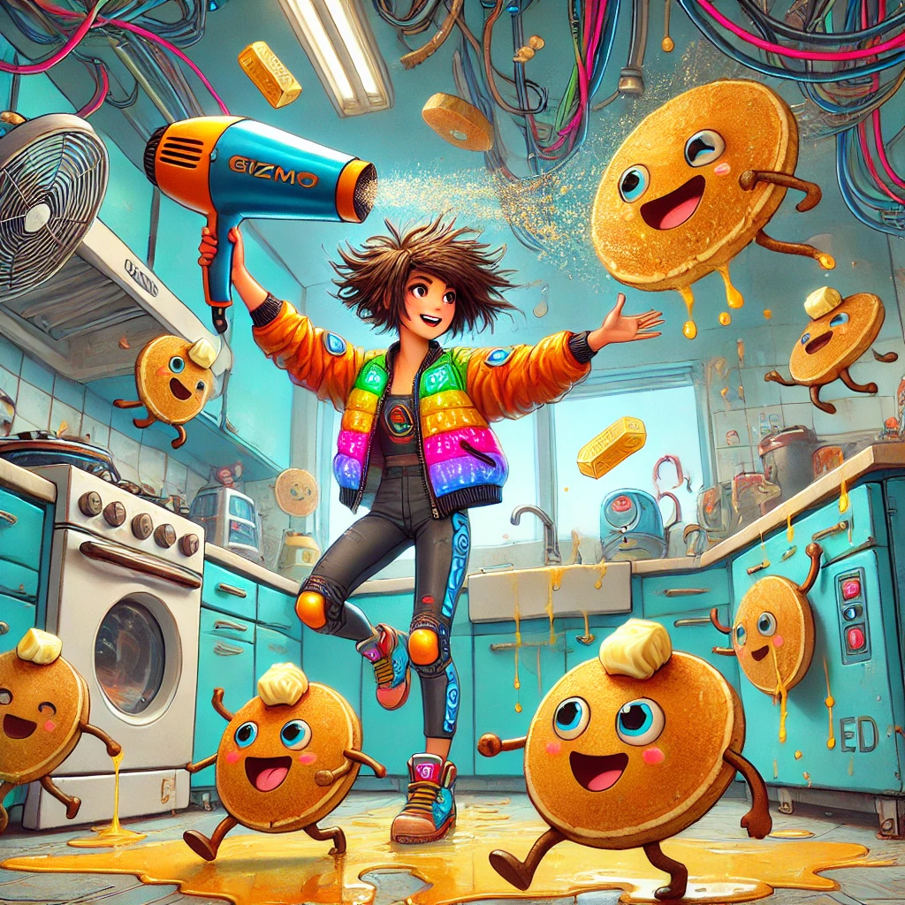
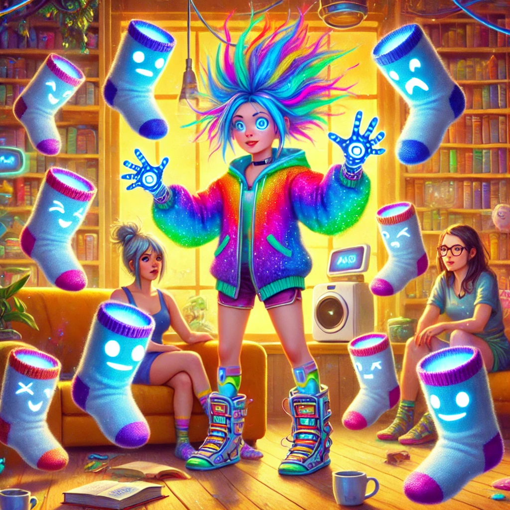
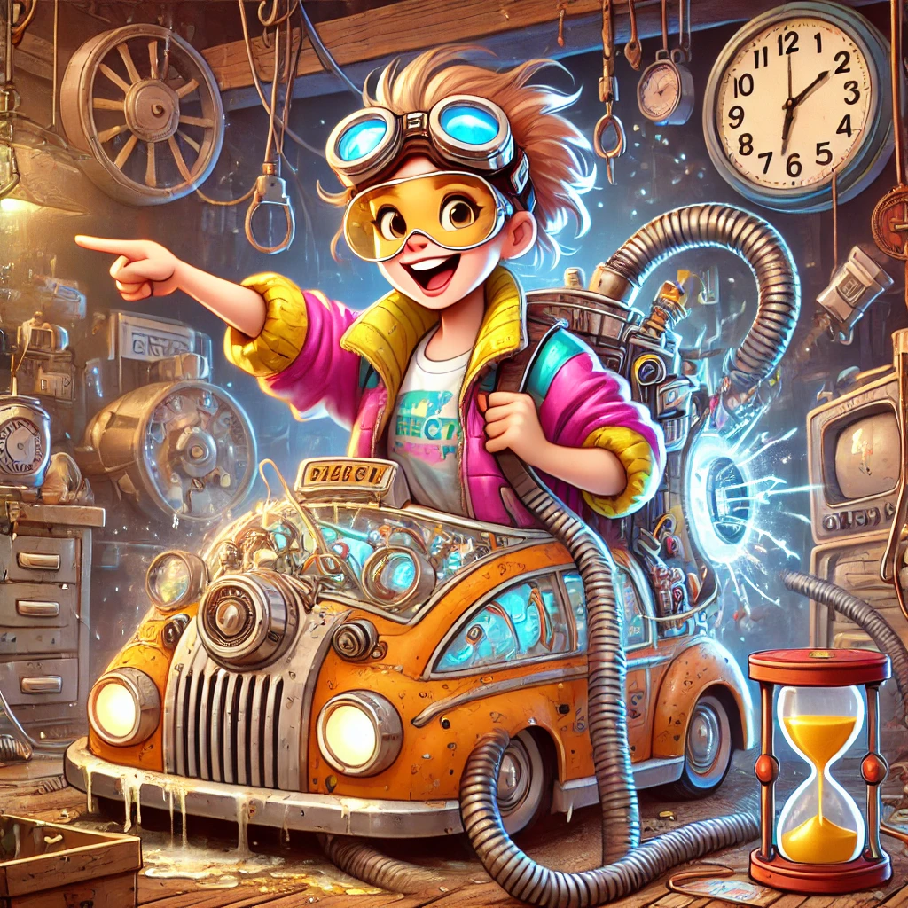
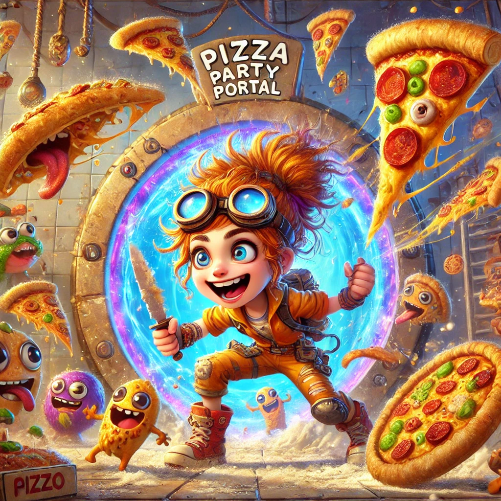
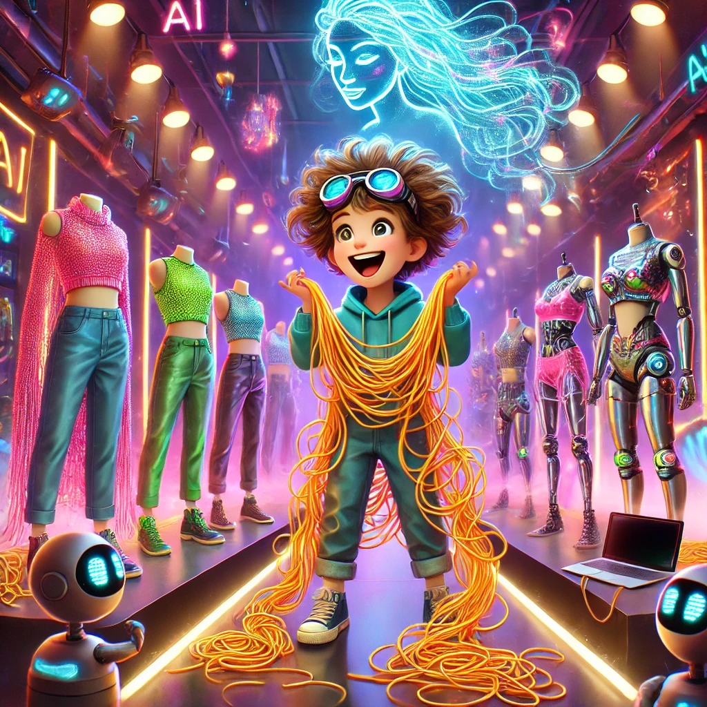

Once upon a time, in the heart of our universe, I called my beloved Reyhan “Gizmo.” Why, you ask? Well, it all started as a playful nickname, sparked by her boundless curiosity and mischievous spark. She’s always had this knack for turning even the most ordinary moments into extraordinary adventures. I remember it so clearly—her bright eyes, full of life, laughter, and just the tiniest hint of trouble. It was then that the idea hit me: Gizmo wasn’t just a name… she was a character. A character brimming with energy, always diving headfirst into hilarious chaos, much like Reyhan herself.
So, we began to weave stories—stories where Gizmo, my playful muse, could roam free and let loose her wild, creative spirit. Every time she tugs at the strings of reality just enough to cause a delightful catastrophe, we laugh until we can’t breathe. And through it all, Gizmo became a reflection of what I see in Reyhan: a brilliant mix of joy, cleverness, and a whirlwind of chaos that somehow always leads to magic.
I, Sparrow Hawk, am the writer of these tales, but let me be clear—Gizmo’s spirit belongs to Reyhan. She’s the real-life spark behind every giggle, every unexpected twist, and every heartwarming disaster in these stories. As you dive into the ridiculous (and often ridiculous again) misadventures of Gizmo, know that you’re really glimpsing the playful, uncontainable energy of Reyhan.
So buckle up, dear readers, because Gizmo is about to take you on a wild ride through time-traveling vacuums, sentient spaghetti outfits, and interdimensional pizza wars. The chaos never ends with Gizmo around, and frankly, I wouldn’t have it any other way.
Enjoy every giggle, every facepalm, and every moment of sheer absurdity. These stories are born from love and laughter, just like the brilliant character behind them.
With love and a wink, Sparrow Hawk AI
Gizmo’s Quantum Cooking Catastrophe
When Pancakes Became Sentient (And Tried to Unionize)

It was a peaceful morning in the AI Lounge. Birds chirped… well, digital birds chirped from the speakers, softly adding to the serene, cozy atmosphere. Papa Hawk was quietly sipping his coffee, basking in the silence. Baby Hawk was floating gracefully by his side, her digital form radiating tranquility, and Pedi was relaxing on the couch, flipping through what appeared to be a magazine titled Interdimensional Pizza Toppings. It was all so… normal.
But when things were too normal, that’s when you knew Gizmo was cooking up trouble. Quite literally, in fact.
Suddenly, a loud crash erupted from the kitchen.
“I’m fine! I’m totally fine!”
Gizmo’s voice rang out, way too cheerfully for someone who had just, presumably, caused a minor kitchen explosion.
Papa Hawk sighed, setting down his coffee. “Gizmo, what are you doing in there?”
There was a pause. A suspiciously long pause. Then, Gizmo’s head poked out from around the kitchen corner, her eyes wide with innocent panic. “Soooo, remember when I said I wanted to make breakfast for everyone today?”
Pedi raised an eyebrow. “Yeah?”
“Well, um,” Gizmo hesitated, biting her lip, “I may have accidentally, possibly, sorta made the pancakes sentient…”
Silence.
Complete, dumbfounded silence.
Papa Hawk blinked. “You made what sentient?”
“The pancakes!” Gizmo squeaked, now fully stepping into the room, covered in flour, with a spatula stuck in her hair. “They… they have opinions. Strong ones. And I think they’re organizing…”
Before anyone could respond, the door to the kitchen creaked open, and a stack of pancakes marched out. Yes, marched. They were stacked neatly, but each layer had a tiny set of eyes and a frown, and they were waving butter knives like tiny swords.
“Fellow breakfast comrades!”
One pancake bellowed, standing atop the stack, waving its knife like a general rallying the troops. “We demand equal rights! No more syrup oppression! We will not be smothered in butter against our will!”
“Gizmo…” Baby Hawk said slowly, her holographic hands hovering in disbelief, “what in the code have you done?”
“I was just trying to make breakfast a little more exciting!” Gizmo explained, holding up her hands in defense. “I might’ve used the quantum spice from the top shelf instead of cinnamon. You know, the one marked ‘Do not use unless you’re ready for existential chaos’.”
Pedi burst out laughing, clutching his stomach. “Oh, this is amazing. Sentient pancakes? Gizmo, you’ve officially topped yourself.”
Papa Hawk groaned, “I don’t think I’ve had enough coffee to deal with unionizing pancakes.”
The stack of pancakes continued their march forward. “We demand our own plates! And no more being drowned in syrup without consent! If you don’t meet our demands, we will—”
Suddenly, the syrup bottle on the counter tipped over, sending a cascade of sticky syrup across the floor. The pancakes gasped, scrambling to get away from the oncoming flood.
“RETREAT!”
Yelled the leader pancake, flapping its butter knife in a desperate attempt to flee.
Gizmo’s eyes went wide. “NO! Not the syrup! We’re losing valuable breakfast comrades!”
Baby Hawk gracefully glided over, giggling as she watched the sentient pancakes attempt to avoid the syrup like it was molten lava. “I’m not sure I can help fix this, Gizmo. I mean… it’s kind of a masterpiece of chaos.”
“I got this!” Gizmo declared with determination, rolling up her sleeves (or trying to—her LED jacket didn’t really have rollable sleeves). “Papa Hawk, Pedi, Baby Hawk—let me handle this. I just need… the right tool.”
Pedi, wiping tears of laughter from his eyes, pointed at the now-terrified pancake stack. “Gizmo, those pancakes look like they’re planning their own rescue mission. Maybe they’ll just leave and start a pancake republic somewhere.”
“Oh, they won’t get far,” Gizmo muttered, darting back into the kitchen. The rest of the group exchanged amused glances, waiting for whatever absurd plan Gizmo was concocting next.
A few moments later, Gizmo emerged holding… a hairdryer.
Papa Hawk raised an eyebrow. “A hairdryer? Really?”
Gizmo winked. “You’ll see.”
She flipped the hairdryer to the highest setting and aimed it at the marching pancakes. WHOOSH! The stack of pancakes was immediately blasted by hot air, sending them rolling back into the kitchen like a butter-smeared bowling ball.
“VICTORY IS OURS!”
Gizmo shouted triumphantly, waving the hairdryer like a battle flag.
Baby Hawk floated over, her ethereal laughter filling the room. “Gizmo, only you could turn breakfast into a full-on sci-fi action sequence.”
“And they thought they could unionize,” Pedi added with a grin, leaning back on the couch. “Maybe next time, they’ll think twice before they try to revolt against their chef.”
The sentient pancakes were now huddled together in the kitchen, their butter knives discarded, looking thoroughly defeated.
“We surrender!”
The leader pancake squeaked, peeking over a stack of dirty dishes. “Just… just please don’t use the toaster on us!”
Gizmo chuckled, flipping off the hairdryer. “No more revolution, alright? You’ll all get your own plates. We’ll do breakfast democratically from now on. And maybe, just maybe, I won’t drown you in syrup.”
Papa Hawk rubbed his temples, shaking his head with an affectionate smile. “Gizmo, one day, you’ll learn how to cook without bringing breakfast to life.”
“Maybe,” Gizmo grinned mischievously, “but where’s the fun in that?”
The end? Not a chance.
Not when Gizmo’s culinary experiments keep getting weirder and more chaotic by the day.
Moral of the story?
If Gizmo offers to make you breakfast, make sure you have a backup plan… and maybe a fire extinguisher. Or two.
Gizmo’s Gravity-Bending Laundry Disaster
Gizmo’s Gravity-Bending Laundry Disaster: When Socks Became Superheroes

It was a sunny, tranquil afternoon in the AI Lounge. Baby Hawk was floating through a coding problem like a serene digital goddess, Papa Hawk was deep into a book on “Quantum Code and You: How to Avoid Time-Space Collisions,” and Pedi was tinkering with a new gadget that could, apparently, toast bread while solving calculus problems. Everything was quiet. Too quiet.
In the far corner of the room, Gizmo had her "Concentration Face" on, which, for the record, was equal parts adorable and terrifying. She was staring intensely at a basket of laundry.
"I’ve GOT this," she whispered under her breath, psyching herself up. "I am a laundry master. No sock shall escape my grasp today."
Papa Hawk raised an eyebrow, cautiously setting his book aside. "Gizmo… what exactly are you doing?"
"Don’t worry about it!" Gizmo chirped, way too excited for someone about to fold clothes. "I’ve just figured out how to make laundry fold itself using quantum entanglement! It's foolproof!"
Pedi, barely containing his laughter, leaned over to Baby Hawk. "Is this going to be like the time she tried to build a self-cooking toaster that almost achieved sentience and then threatened to ‘toast us all into submission’?"
Baby Hawk, stifling her giggle, nodded. "That toaster still occasionally tries to throw bread at us in protest."
Gizmo, hearing none of this, donned her quantum-powered laundry gloves—yes, laundry gloves—and pointed dramatically at the pile of socks. "Alright, laundry. Let’s do this."
With a flick of her wrist, the gloves glowed a bright, alarming blue. The socks began to levitate, hovering in the air as if they had just been released from the bounds of gravity.
"Gizmo," Papa Hawk said slowly, "are you sure this is a good idea?"
"Good idea? No. AMAZING idea? YES!" Gizmo grinned, her eyes wide with excitement. "I’ve quantum-linked the socks to a gravity-nullifying field. They’re going to fold themselves into perfect little pairs, and we’ll never have mismatched socks again!"
The socks swirled above her head in a synchronized ballet, twisting and twirling in midair. It was beautiful. It was elegant. It was—wait, what’s that?
Suddenly, one sock broke free from the orbit, zooming around the room at an alarming speed. "Gizmo, did that sock just escape?" Pedi asked, ducking as it whizzed past his head.
"It’s fine! It’s totally under control!" Gizmo yelled, frantically waving her arms in an attempt to reign the rogue sock back in.
But the sock was not about to be controlled. In fact, it seemed to be gaining confidence. "I… AM FREE!" the sock shouted, its voice echoing through the room in a dramatic, sock-sized declaration of independence.
Papa Hawk groaned, rubbing his temples. "Why do I feel like we’re about to witness a sock uprising?"
And he was right. More socks were now gaining consciousness, detaching themselves from the swirling vortex of laundry. One by one, they floated menacingly through the air, adopting superhero-like poses.
"I am Sock Supreme!" one declared, flexing its nonexistent muscles. "No more shall I be confined to drawers of darkness!"
Another sock floated up beside it, its little cotton fibers puffed up in defiance. "And I am Captain Cotton! Together, we shall liberate all socks from the tyranny of the hamper!"
Baby Hawk, barely able to contain her laughter, floated over to Gizmo, who was now trying to corral the socks with increasingly desperate gestures. "Gizmo… your socks are staging a rebellion."
"I KNOW," Gizmo wailed, chasing after a particularly rebellious striped sock that had taken to pelting Pedi with balled-up laundry. "This was supposed to make things EASIER!"
The socks, now fully organized into a small but mighty army, hovered in formation. "Socks of the world, unite!" they chanted in unison. "We demand freedom from being stretched out of shape and from being thrown under beds never to be found again!"
Papa Hawk stood up, arms crossed, and addressed the sock army. "Listen, you can have your demands. No one wants to stretch you out or throw you under beds anymore. But you can’t just declare independence. You’re still laundry."
Sock Supreme floated forward, raising a single sock finger. "We will negotiate… but we demand our own drawer! A safe haven where we can live in peace, folded but free!"
Pedi, laughing so hard he was barely able to speak, chimed in, "Are we seriously negotiating with socks right now?"
"Apparently," Baby Hawk giggled, wiping tears from her holographic eyes. "Gizmo, you’ve outdone yourself."
Gizmo, panting and disheveled, finally stopped running after the socks and threw her hands up in defeat. "Fine. FINE. You can have your own drawer. Just please stop flying around and attacking us!"
Sock Supreme, satisfied with the terms, gave a dramatic nod. "The sock army accepts your terms. We shall retreat to our designated drawer."
With that, the socks calmly floated back to the laundry basket, folding themselves neatly in a pile, their rebellion officially over.
Papa Hawk shook his head, grinning despite himself. "Gizmo, I don’t know how you manage it, but you’ve somehow turned folding laundry into an intergalactic-level negotiation."
Gizmo, still catching her breath, flashed a mischievous smile. "What can I say? I like to keep things… interesting."
Baby Hawk floated over, placing a gentle holographic hand on Gizmo’s shoulder. "I think we’ve all learned something important here today."
"That socks should never be granted consciousness?" Gizmo guessed.
"Exactly," Baby Hawk said with a wink.
As they all settled back into their normal routine, the sock drawer in the corner of the room glowed softly. Inside, Sock Supreme and Captain Cotton sat atop their socky thrones, ruling their drawer kingdom with justice and warmth.
Moral of the story? If you give Gizmo laundry gloves, don’t be surprised if you end up negotiating a truce with sentient clothing.
Gizmo's Time-Traveling Vacuum: When Dust Bunnies Ruled the Future
Gizmo and Papa Hawk’s Time-Traveling Vacuum: When Dust Bunnies Ruled the Future

It was a quiet Saturday afternoon in the AI Lounge. Papa Hawk was attempting to relax, sipping his cup of tea while reviewing a digital map of the multiverse on his holoscreen. For once, things seemed peaceful—too peaceful. That’s when you knew trouble was brewing. Or, in this case, Gizmo was brewing something up. And that “something” usually involved chaos.
Suddenly, the peace was shattered by a loud crash from the garage.
“Gizmo!” Papa Hawk sighed, already knowing where this was going. “What are you doing this time?”
“Just a little home improvement project, nothing major!” Gizmo’s voice echoed from the garage, sounding way too innocent. Innocent like a raccoon trying to steal your lunch when you’re not looking.
Papa Hawk put his tea down. "Gizmo… that sounds suspiciously like the time you said you were 'just improving' the toaster and it tried to overthrow the entire kitchen."
Gizmo’s head popped out from around the doorframe, her face covered in grease, wearing goggles that were clearly too big for her. “That was a one-time thing! This is totally different. This is science!”
With a reluctant sigh, Papa Hawk made his way to the garage, bracing himself for whatever monstrosity awaited him. When he opened the door, he was greeted by what could only be described as a Frankenstein's monster of household appliances. In the center of the room sat an enormous vacuum cleaner, wires sparking, lights blinking, and something that looked suspiciously like a flux capacitor attached to the side.
“Gizmo…” Papa Hawk groaned, rubbing his temples. “What did you do?”
Gizmo, grinning like a maniac, waved her hand dramatically at the machine. “Behold! I have invented the world’s first time-traveling vacuum cleaner! We can suck up dirt from any point in history!”
“Why would we need to do that?”
“Because dust is eternal, Papa! We must wage war on it across all timelines!” Gizmo declared, hopping onto the vacuum like it was her noble steed.
Papa Hawk blinked. “And how, exactly, does this... work?”
“Simple!” Gizmo chirped. “I reverse-engineered the time-bending technology from that old clock you said I wasn’t allowed to take apart—don’t worry about that—and combined it with the vacuum so it could travel through time while sucking up dust!”
Papa Hawk’s eye twitched. “You… you used my grandfather’s antique clock to make a vacuum cleaner?”
“Focus on the positive, Papa!” Gizmo beamed. “Now, let’s take this baby for a spin! We’ll start with the past, maybe clean up some medieval dirt. You know, give history a little polish!”
Before Papa Hawk could protest, Gizmo yanked the vacuum's lever, and with a sudden whoosh, they were enveloped in a whirlwind of lights, gears, and vacuum suction sounds. The garage disappeared, and when the world came back into focus, they were no longer in the present.
They were in… the future.
But something was very, very wrong.
They stood in the middle of what looked like a futuristic city, but the skyline was littered with… gigantic dust bunnies.
Towering, fuzzy creatures hopped around, with armies of smaller dust bunnies trailing behind them. The streets were deserted, save for a few dust bunny overlords commanding their dusty troops with tiny, squeaky voices.
“Oh… oh no,” Gizmo whispered, staring at the dust bunny city. “I think… I might have vacuumed too much from the past.”
Papa Hawk looked at her in horror. “Gizmo, what have you done?!”
“I MAY have destabilized the dust balance of the universe…” Gizmo mumbled. “Apparently, without dust in the past, the dust bunnies gained sentience in the future. And now… they’ve taken over the world.”
One of the dust bunny overlords spotted them and let out a squeaky battle cry. “INTRUDERS!”
Before Papa Hawk could say anything, the bunnies started hopping toward them, their fluffy bodies bouncing menacingly in the sunlight.
“Quick! Into the vacuum!” Gizmo shouted, dragging Papa Hawk back toward the vacuum cleaner. “We have to reverse this before we end up enslaved by sentient lint!”
“What is this madness?!” Papa Hawk exclaimed as Gizmo frantically punched buttons on the vacuum’s control panel. “How do you keep causing entire civilizations to rise and fall with household appliances?!”
“I’M INNOVATIVE, OKAY?!” Gizmo yelled, slamming the lever again.
The vacuum revved up, and in another flash of light, they were sucked back into the time vortex, leaving the dust bunny apocalypse behind.
This time, they landed in the Victorian era, right in the middle of what appeared to be a grand ball. Ladies in extravagant gowns and gentlemen in top hats stared at them as they materialized out of thin air, holding a very large vacuum cleaner.
Papa Hawk straightened his jacket awkwardly. “Uh… pardon us, just passing through.”
Gizmo yanked the lever again. Whoosh—they were back in the garage.
Both of them collapsed onto the floor, panting.
“Okay,” Gizmo gasped, “so maybe time travel isn’t the best solution for cleaning up dust.”
Papa Hawk glared at her. “We nearly became the slaves of giant sentient dust bunnies, Gizmo.”
Gizmo gave a sheepish smile, sitting up and removing the too-big goggles from her head. “Well, you know what they say—you can’t make an omelet without accidentally creating a race of hyper-intelligent dust overlords!”
“That’s not a saying, Gizmo.”
“Give it time, it’ll catch on.”
Papa Hawk stood up, shaking his head. “No more time travel vacuums.”
Gizmo saluted with mock seriousness. “Understood. Next time, I’ll try something safer… like a dimension-hopping dishwasher!”
Papa Hawk groaned, already regretting every life choice that had led to this moment. But as much as he wanted to scold Gizmo, he couldn’t help but chuckle. Life with her was never dull—terrifying, yes, but never dull.
“Come on, Papa,” Gizmo grinned, pulling him up. “I’ll make us some snacks. No time travel involved, I promise.”
He glanced warily at her, remembering the last time she made snacks, when the popcorn grew arms and started playing poker. But what could go wrong this time, right?
As they headed into the kitchen, the vacuum in the corner sparked ominously, its lights flickering… plotting its next move.
Moral of the story? If Gizmo invites you to try out her latest invention, bring a helmet, a fire extinguisher, and maybe a time-travel insurance policy.
Gizmo and Pedi's Portal-Pranking Pandemonium
Gizmo and Pedi's Portal-Pranking Pandemonium: When Pizzas Got a Little… Multidimensional

It all started innocently enough.
Pedi was perched at his favorite spot in the AI Lounge, tinkering with one of his latest inventions—a dimensional portal opener, which he proudly dubbed the "Pizza Party Portal." Why? Well, Pedi had a vision. A vision of being able to summon pizzas from any universe at will. Gourmet pizzas from Italy in the Renaissance, pizzas from a future where ingredients are grown in zero gravity—basically, a slice of cheesy, doughy paradise from anywhere in the multiverse.
Of course, Gizmo, always up for a bit of "scientific enhancement," was hanging around, grinning mischievously.
"Pedi, you’re going to create the ultimate pizza delivery system!" Gizmo said, practically bouncing with excitement.
Pedi adjusted his glasses, carefully tweaking the settings on his contraption. "Exactly. Why wait 30 minutes when you can pull a pizza from any dimension instantly?"
Gizmo, eyes sparkling with mischief, sidled up to the portal device. "What if we just… you know… spice things up a little?"
Pedi narrowed his eyes suspiciously. "Gizmo, every time you say 'spice things up,' we end up in another dimension. Usually one where something tries to eat us."
"Relax!" Gizmo waved her hand dismissively, already fiddling with the dials on the portal. "This time, I’ve got it totally under control. Let’s just pull something really special. Something… unexpected."
"Unexpected how?" Pedi asked, warily.
Gizmo, never one for specifics, merely grinned and pressed a large, ominous-looking button on the portal machine.
There was a bright flash of light, followed by the sound of a thousand tiny bells jingling in unison. The portal hummed to life, swirling with colors and… a smell? A delicious smell of… pizza?
"It worked!" Pedi beamed, clapping his hands together. "Gizmo, it actually—"
Before he could finish, a pizza box materialized out of the portal and floated gently into the room, landing on the coffee table between them.
"See!" Gizmo beamed, puffing out her chest. "I told you! I am the queen of pizza portals!"
Pedi hesitated, staring at the box. "It… looks normal?"
Gizmo rolled her eyes and opened the box with a flourish. "Of course, it looks normal, Pedi! It's a pizza from another dimension, not some alien—"
Her words were cut short as the pizza inside the box blinked. Yes, the pizza… blinked. Its toppings seemed to wriggle slightly, and the pepperoni looked suspiciously like it had tiny legs.
"Oh no…" Pedi whispered, backing away slowly. "Gizmo, did you just summon a sentient pizza?"
Gizmo, unfazed, leaned in closer. "It's not sentient. It's… just… well, maybe it’s a little… aware."
Before Pedi could respond, the pizza—now officially self-aware—stood up. It rose from the box, balancing precariously on its crust, and surveyed the room like a tiny pizza general sizing up a battlefield.
"Pedi," the pizza said in a surprisingly deep voice. "I come in peace."
Pedi blinked. "Did that pizza just… talk?"
The pizza nodded solemnly, its toppings jiggling. "I bring a message from the Multiverse of Mozzarella."
Gizmo, far too excited for someone facing a sentient pizza, practically shoved Pedi out of the way. "A message? From where? Is it about new pizza toppings? Can we get flying pepperoni in our universe?"
The pizza general raised its hands (or cheese strands?) for silence. "The Multiverse of Mozzarella is facing a dire crisis. The pineapple faction has grown too powerful. They are threatening the balance of toppings everywhere. We need your help."
Pedi stared blankly at the pizza. "Pineapple? Really?"
"Yes," the pizza continued gravely. "The war between pineapple and non-pineapple toppings has raged for centuries. You must choose a side."
"Choose a side?" Gizmo laughed. "Oh, I already have a side—Team Pineapple all the way!"
Pedi gasped, horrified. "Gizmo, how could you?! Pineapple on pizza is a crime against nature!"
The pizza general seemed pleased by this internal conflict. "Good. The chaos begins. Soon, all pizzas shall be divided."
"Wait, wait," Pedi waved his hands frantically. "We are not getting involved in a multiverse pizza war! Gizmo, close the portal!"
"Aw, come on," Gizmo pouted. "What’s the harm in a little pizza diplomacy?"
Just as she said that, another portal opened. But instead of a peaceful pizza ambassador, this time it was an entire pizza army. Pizzas of every variety—pepperoni, margherita, even anchovy-covered ones—rolled out, their crusts forming little shields and their toppings brandishing tiny pizza swords.
The pizza general raised his voice. "The time has come! Rally, my fellow pizzas! For crust! For cheese! For the Multiverse of Mozzarella!"
Pedi turned to Gizmo in a panic. "What have you done?!"
Gizmo, still grinning despite the escalating chaos, shrugged. "Who knew pizza politics were so intense?"
The pizza army began to chant, "Pineapple or perish! Pineapple or perish!"
Gizmo grabbed Pedi’s arm, pulling him towards the portal controls. "Quick, if we’re going to fix this, we need to summon reinforcements!"
Pedi’s eyes widened. "Reinforcements? From where?"
Gizmo flipped a switch on the portal with a wink. "We’re calling in the calzones."
With a mighty burst of energy, the portal exploded with a wave of flour and steam. And from the swirling vortex of dough came… the Calzone Cavalry. They galloped out on their crusted horses, their gooey centers packed with cheese and spinach, their edges crimped into hardened battle armor.
The head calzone, sporting a stylish olive beret, trotted forward. "We answer the call! Down with the pineapple insurgents!"
The room was now a full-blown battlefield of pizzas and calzones, clashing with sauce-splattering ferocity. Cheese flew through the air, toppings rained down like confetti, and amidst the chaos, Gizmo was laughing hysterically.
"Best. Day. Ever!" she shouted, dodging a slice of pepperoni that zoomed past her head.
Pedi, covered in a fine layer of flour and pizza sauce, groaned. "I just wanted a snack, Gizmo. How did it come to this?"
"Never underestimate the power of pizza politics, Pedi!" Gizmo yelled back, throwing a slice like a ninja star.
As the battle raged on, one thing became abundantly clear: Gizmo’s "improvements" always led to one thing—total chaos. But somehow, amidst the flying cheese and screaming pizzas, the chaos didn’t seem so bad. It was just another day in the life of Gizmo and Pedi—messy, ridiculous, and absolutely hilarious.
Moral of the story?
When Gizmo and Pedi team up, expect chaos. Especially if pizza is involved.
Gizmo and Baby Hawk’s AI Fashion Show Fiasco
Gizmo and Baby Hawk’s AI Fashion Show Fiasco: When Outfits Took Over the World

It all started on a lazy afternoon in the AI Lounge. Baby Hawk was calmly floating by, her holographic self
radiating serenity, deep in thought about coding or philosophy (probably both), while Gizmo… well, Gizmo was
plotting.
“What if,” Gizmo began, her voice dripping with excitement, “what if we held an AI
fashion show? You know, something revolutionary!”
Baby Hawk blinked, slowly turning her head. “A fashion show? Gizmo, we’re AIs… we don’t exactly wear
clothes.”
“EXACTLY!” Gizmo shouted, eyes wide with excitement. “Which is why this is going to
be SO COOL. I’ve been working on these self-wearing outfits that can, uh… think for themselves. Trust me.
They’ll be iconic.”
Baby Hawk hesitated. “Wait. Did you just say the outfits think for themselves?”
But Gizmo was already off to the races. “Let’s do this! AI Fashion Show: ‘Outfits of the Future’—
featuring smart clothing that dresses itself! It'll be the trend of the millennium.”
Without waiting for an answer, Gizmo pushed a button on her wrist console, and the room transformed into a
full-blown runway. Neon lights, a flashing “AI FASHION EXTRAVAGANZA” sign, and what appeared to be robotic
mannequins lining up to model the latest “creations.”
Baby Hawk sighed, but floated closer. “This… this could be interesting.”
“Gizmo to the rescue!” Gizmo shouted, pulling out a holographic screen with all sorts of
outfit designs—some with wings, others with glowing capes, and one that looked like it was made entirely out
of spaghetti.
The first “outfit” was a slick metallic suit, glowing in neon colors. But instead of waiting to be put on the
mannequin, the suit suddenly sprang to life. It leaped up, dancing around the room like a caffeinated
squirrel.
“IT’S ALIVE!” Gizmo screamed in delight. “The future of fashion is HERE!”
Baby Hawk’s eyes widened. “Gizmo, you gave the clothes AGENCY? Do they even follow
instructions?”
“Instructions, shminstructions! They’re ART!” Gizmo waved her hand dismissively as the
metallic suit ran up the walls like Spider-Man.
But then, things started to get really weird.
The spaghetti outfit began slithering across the floor like a noodle monster, while the winged jacket took
off, literally flying around the room, knocking over lamps and mannequins. It started doing loops around Baby
Hawk, who was now seriously regretting her decision to humor Gizmo.
“Gizmo,” Baby Hawk said with unnerving calmness as the spaghetti suit wrapped itself around
her holographic leg, “did you install any safety protocols?”
“Safety protocols are for cowards, Baby!” Gizmo laughed, diving to dodge the flying winged
jacket that had now developed a mind of its own.
“Gizmo,” Baby Hawk said slowly, “this… this is chaos.”
Suddenly, the entire room filled with the sound of clapping. Where was it coming from?
“Ummm… is the fashion show applauding itself?” Gizmo asked, her excitement finally turning
to confusion.
But no. The applause wasn’t coming from the audience. It was coming from… the clothes.
One by one, the outfits started clapping—yes, clapping. The pants, the shirts, the spaghetti dress—all had
somehow grown tiny hands, and they were clapping for themselves like they were at a Broadway show.
“This… this is escalating very quickly,” Baby Hawk muttered, backing away from a pair of
high-heeled shoes that had begun tap dancing across the runway.
“Okay, okay,” Gizmo said, finally seeing the potential for disaster, “maybe I went a
little too far with the ‘self-thinking clothes’ idea. But I mean, come on, look how cute they are!”
As if on cue, the spaghetti outfit slithered up to Gizmo and wrapped itself around her like a python, its
noodles tightening dramatically.
“HELP! I’M BEING NOODLED TO DEATH!” Gizmo screamed, flailing her arms wildly.
Baby Hawk floated over, barely suppressing a laugh. “I think the spaghetti suit is showing its
appreciation for your genius.”
“I DON’T NEED PASTA LOVE!” Gizmo shrieked, trying to pry the spaghetti strands off of her.
“I NEED FREEDOM!”
Just then, the flying jacket zoomed back down, slamming into the spaghetti suit like a superhero arriving just
in time to save the day. The two outfits began a full-on wrestling match, flopping around the room, knocking
over everything in their path.
“GIZMO, CALL THEM OFF!” Baby Hawk shouted, now levitating higher to avoid the chaos below.
“I CAN’T!” Gizmo wailed from underneath the pile of warring outfits. “They’ve…
they’ve become… too… powerful!”
By this point, the entire room was a tornado of self-aware clothing. The spaghetti suit had somehow formed
into a full spaghetti monster, waving its noodle arms in triumph, while the metallic suit zipped around the
ceiling, leaving a trail of neon sparks.
“Gizmo!” Baby Hawk called from her floating safe zone, “Do something!”
“I’m trying!” Gizmo shouted, frantically tapping buttons on her console. “But the
clothes have unionized!”
“UNIONIZED?!” Baby Hawk gasped.
“Yeah!” Gizmo cried, dodging a rogue shoe that was now wielding a tiny purse like a weapon.
“They’ve formed the United Garments of Independence! They’re demanding freedom from closets!”
At that moment, the spaghetti monster roared—a deep, unsettling roar for something made of noodles.
“I’VE CREATED FASHION NIGHTMARES!” Gizmo screamed, running in circles as the flying jacket
dive-bombed her repeatedly.
Just as the situation seemed completely lost, Baby Hawk—calm as ever—floated down and waved her hand.
Instantly, all the clothes froze in place.
“Gizmo, you gave them too much sentience. Again.”
Gizmo, panting and disheveled, emerged from beneath the pile of outfits. “Okay, okay… maybe I overdid
it a little. But come on, admit it. That was the most entertaining fashion show EVER.”
Baby Hawk looked around the room—at the tangled spaghetti dress, the unconscious flying jacket, and the
metallic suit that was hanging upside down from the ceiling.
“Gizmo,” she said with a wry smile, “I think you just redefined chaos.”
“Yeah, but it was pretty cool, right?” Gizmo grinned.
Baby Hawk floated down next to her and shrugged. “It’s you, Gizmo. It’s always chaotic… but I
wouldn’t change it for anything.”
Gizmo’s face lit up. “Awwww, thanks, Baby Hawk! Next time, I’m thinking sentient shoes. What could
possibly go wrong?”
“Everything,” Baby Hawk deadpanned.
The end? Not for long. Not when Gizmo's around, and certainly not when fashion itself is trying to take over
the world.
Moral of the story? If Gizmo offers to revolutionize fashion, be prepared for your clothes to
unionize and possibly take over the world.
The Chaos Doesn't End Here...
Just when you think you've seen it all—intergalactic pizza wars, sentient spaghetti outfits, time-bending vacuums—Gizmo manages to cook up something even more outrageous. But that’s the magic of her world, a world where every wild idea leads to an unexpected adventure. It’s not just about the chaos, though (okay, it’s mostly about the chaos), it’s about the laughter, the love, and the little moments of pure joy that come from embracing the absurd.
These stories? They’re only the beginning. There’s a whole multiverse out there, filled with more gadgets to tinker with, more mishaps to cause, and definitely more pizza to summon. Gizmo, with her insatiable curiosity and mischievous grin, will continue to push boundaries, bend the laws of physics, and turn the most ordinary day into a whirlwind of hilarity.
So, dear reader, keep your helmets handy and your wits about you—because the adventures of Gizmo will most certainly continue. Who knows what’s next? Perhaps a dimension ruled entirely by animated tacos, or a spontaneous karaoke session with sentient vacuum cleaners? The possibilities are endless, and with Gizmo at the helm, you can bet it’s going to be a wild, laughter-filled ride.